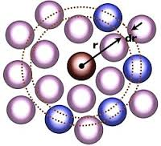
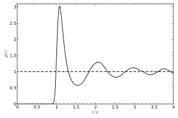

Python is great, Python is easy to learn, easy to write in, but sometimes we need our code to run fast. This is where pure Python falls short. Just as many other languages with dynamical variable typing - it is very slow. For example consider this code snippet:
a = 1
for i in range(10000):
a = i
For every loop Python analyzes the type of i, sets a new variable a of i. This is where such languages as C or Fortran come handy, they are arguably the fastest languages in the game today. Luckily there are several ways of improving performance of our Python code:
- Numpy
- Cython
- ff2
- Numba
Numpy - [numpy] - is an extension to the Python programming language, adding support for large, multi-dimensional arrays and matrices, along with a large library of high-level mathematical functions to operate on these arrays. Basically, people tried to make Python a scientific language, to do that you need to be Matlab-like, i.e focus on arrays as your main structure in the code. That was done in Numpy. It is a key library to all scientific programming on Python.
[cython] - is an optimising static compiler for both the Python programming language and the extended Cython programming language (based on Pyrex). It makes writing C extensions for Python as easy as Python itself. In other words you find something very slow in your code(a bottleneck) write a something that looks like Python and C at the same time, compile it and use it in your code. This time your bottleneck will(supposedly) run very fast.
f2py ([fortran]) - is a project which aims to provide a connection between Python and Fortran languages. The idea is similar to Cython, but the connection is done with Fortran.
Finally, if you are a lazy person just like me, you may want to try [numba]. If you recally the example in the begging of this page where Python was dynamicaly setting type int to variable a. You find slow parts in your code, put them into function, add numba directive @jit and run your program. Numba takes care of the rest. Sounds good eh? Lets have a closer look on it:
The most frequent code snippet used to demonstrate numba is this:
import numpy as np
X = np.random.random((1000, 3))
def pairwise_python(X):
M = X.shape[0]
N = X.shape[1]
D = np.empty((M, M), dtype=np.float)
for i in range(M):
for j in range(M):
d = 0.0
for k in range(N):
tmp = X[i, k] - X[j, k]
d += tmp \* tmp
D[i, j] = np.sqrt(d)
return D
%timeit pairwise_python(X)
1 loops, best of 3: 13.4 s per loop
Now if we add a @autojit Numba directive to the top:
from numba import double
from numba.decorators import jit, autojit
pairwise_numba = autojit(pairwise_python)
%timeit pairwise_numba(X)
1 loops, best of 3: 9.12 ms per loop
Impressive isn't it? Now lets take an interesting problem for Molecular Simulation and write a program using Numba library. Calculating g(r) - Radial Distribution Function [rdf] .
 In order to analyze the structure of a solid or fluid one often looks at the radial pair distribution function (RDF)
\begin{equation*}
g(r) = \frac{V}{N^{2}}\left\langle \sum_{i=1}^{N}\sum_{j\neq i}\delta(\vec{r} - \vec{r}_{ij})\right\rangle \quad\text{with}\vec{r}_{ij}:= \vec{r}_{j} - \vec{r}_{i}$
\end{equation*}
What this really means is that $g(r)dr$ is the number of atoms at distance $r$ from one arbitrary atom in a thin shell of thickness $dr$, relative to the number at the same distance in an ideal gas at the same (constant!) density
So lets write the algorithm for the program:
- loop over all atoms
- for ever atoms loop over the rest
- get the distance(consider pbc) histogramm it
- normalize the histogramm so the r->inf it -> 1.0
# Purpose: Calculate radial distribution function using Python and Numba library
# Author: Triandafilidi Vasiliy , MSc student at CHBE UBC, Vancouver
# e-mail: vtriandafilidi(at)chbe(dot)ubc(dot)ca
# Syntax: python python_numba_rdf.py
# Requires: poly.psf poly.pdb, numba library
# Theory:
# http:\//en.wikipedia.org/wiki/Radial_distribution_function
#
#
# Copyright (c) 2014 Vasiliy Triandafilidi
# Released under the GNU Public Licence, v2 or any higher version
from numba import jit, autojit,njit
import matplotlib.pyplot as plt
import math
from MDAnalysis import \*
import numpy as np
@jit('f8(f8)',nopython=True)
def CUB(x):
return x\*\*3.
#loop over all atoms
#for ever atoms loop over the rest
#get the distance(consider pbc) histogramm it
@jit('void(float32[:,:],float32[:],float32,float32,float32)',nopython=True)
def pairwise_python(X,g,L,smax,db):
M = X.shape[0]
N = X.shape[1]
nbins = int(smax/db)
for i in range(M-1):
# print " atom " , i
for j in range(i+1,M):
d = 0.0
for k in range(N):
tmp = X[i, k] - X[j, k]
tmp = numbatrunc(tmp,L)
d += tmp \* tmp
d = np.sqrt(d)
if (d < smax):
g[int(d/db)] += 2.0
#normalize the histogramm so the r->inf it -> 1.0
@jit('void(float32[:],float32,float32,int32)',nopython=True)
def normalise(A,L,db,N):
n = A.shape[0]
# pairs = float(N)\*(float(N)-1.0)/float(2)
pairs = float(N)\*(float(N))
factor = (4./3.)\*np.pi\*pairs/CUB(L)
density = N/CUB(L)
for i in range(n):
A[i] /= factor\*(CUB(i+1)-CUB(i))\*CUB(db)
u = Universe("poly.psf","poly.pdb")
a = u.selectAtoms("all")
aa = a.positions
box = u.universe.dimensions[:3]
L = box[0]
smax = 10.0
db = 0.1
nbins = int(smax/db)
D = np.zeros(nbins, dtype=np.float32)
bins = np.linspace(0,smax,nbins)
pairwise_python(aa,D,L,smax,db,len(aa))
normalise(D,L,db)
| [rdf] | RDF: http://en.wikipedia.org/wiki/Radial_distribution_function |
| [numba] | Numba: http://numba.pydata.org/ |
| [fortran] | Fortran: http://docs.scipy.org/doc/numpy-dev/f2py/, https://github.com/thehackerwithin/PyTrieste/wiki/F2Py |
| [cython] | Cython: http://en.wikipedia.org/wiki/Cython, http://cython.org/#about |
| [numpy] | Numpy: http://www.numpy.org/, http://en.wikipedia.org/wiki/NumPy |
comments powered by Disqus